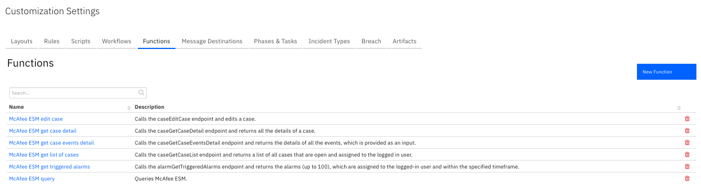
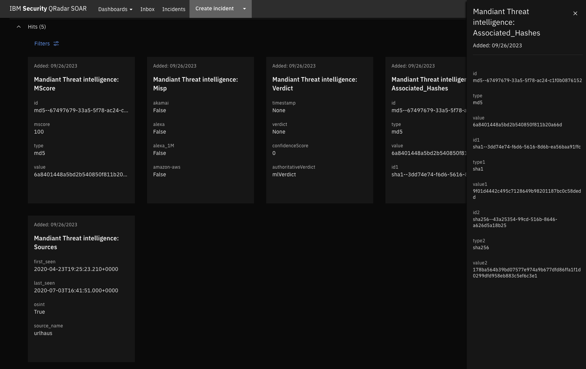
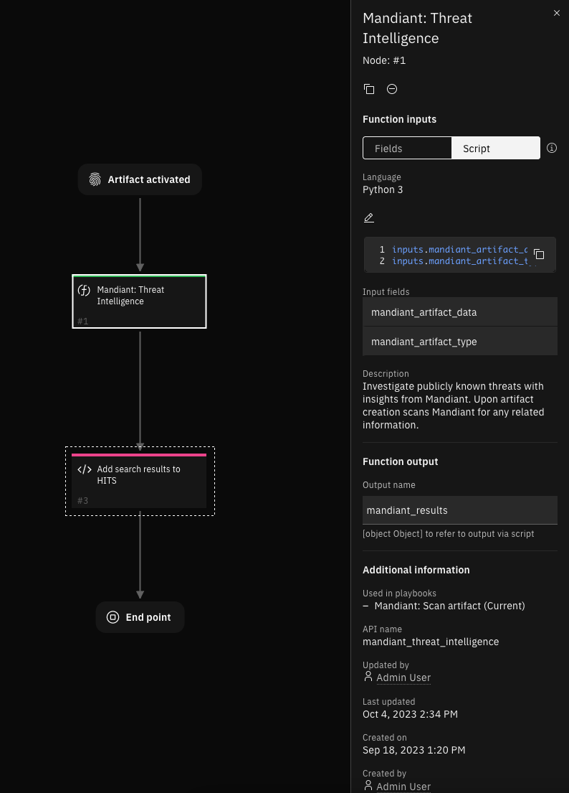

Mandiant Threat Intelligence¶
Table of Contents ¶
Release Notes¶
Version |
Date |
Notes |
|---|---|---|
1.0.0 |
10/2023 |
Automatically search Mandiant for threat intelligence on artifacts |
1.0.1 |
10/2023 |
Added X-App-Name header to all search requests being made |
Overview¶

Automatically search Mandiant for information on artifacts
Investigate publicly known threats with insights from Mandiant. Upon artifact creation, the application is shipped with a disabled playbook which when activated, automatically scans Mandiant for any related information.
Supported Artifacts¶
URLs
Domain names
Ip addresses
MD5 hashes
Key Features¶
All enrichment information is displayed as Hits in the artifact section.
Retrieves a MScore.
Gathers MISP related information.
Identifies other sources or similar candidates.
Generates a verdict by gathering information on various analysis performed on the artifact.

Requirements¶
This app supports the IBM Security QRadar SOAR Platform and the IBM Security QRadar SOAR for IBM Cloud Pak for Security.
SOAR platform¶
The SOAR platform supports two app deployment mechanisms, Edge Gateway (formerly App Host) and integration server.
If deploying to a SOAR platform with an Edge Gateway, the requirements are:
SOAR platform >=
48.2.The app is in a container-based format (available from the AppExchange as a
zipfile).
If deploying to a SOAR platform with an integration server, the requirements are:
SOAR platform >=
48.2.The app is in the older integration format (available from the AppExchange as a
zipfile which contains atar.gzfile).Integration server is running
resilient-circuits>=49.1.0.If using an API key account, make sure the account provides the following minimum permissions:
Name
Permissions
Org Data
Read
Function
Read
The following SOAR platform guides provide additional information:
Edge Gateway Deployment Guide or App Host Deployment Guide: provides installation, configuration, and troubleshooting information, including proxy server settings.
Integration Server Guide: provides installation, configuration, and troubleshooting information, including proxy server settings.
System Administrator Guide: provides the procedure to install, configure and deploy apps.
The above guides are available on the IBM Documentation website at ibm.biz/soar-docs. On this web page, select your SOAR platform version. On the follow-on page, you can find the Edge Gateway Deployment Guide, App Host Deployment Guide, or Integration Server Guide by expanding Apps in the Table of Contents pane. The System Administrator Guide is available by expanding System Administrator.
Cloud Pak for Security¶
If you are deploying to IBM Cloud Pak for Security, the requirements are:
IBM Cloud Pak for Security >=
1.12.Cloud Pak is configured with an Edge Gateway.
The app is in a container-based format (available from the AppExchange as a
zipfile).
The following Cloud Pak guides provide additional information:
Edge Gateway Deployment Guide or App Host Deployment Guide: provides installation, configuration, and troubleshooting information, including proxy server settings. From the Table of Contents, select Case Management and Orchestration & Automation > Orchestration and Automation Apps.
System Administrator Guide: provides information to install, configure, and deploy apps. From the IBM Cloud Pak for Security IBM Documentation table of contents, select Case Management and Orchestration & Automation > System administrator.
These guides are available on the IBM Documentation website at ibm.biz/cp4s-docs. From this web page, select your IBM Cloud Pak for Security version. From the version-specific IBM Documentation page, select Case Management and Orchestration & Automation.
Proxy Server¶
The app does support a proxy server.
Python Environment¶
Python 3.6 and Python 3.9 are supported. Additional package dependencies may exist for each of these packages:
resilient-circuits>=49.1.0
Development Version¶
This app has been implemented using:
Product Name |
API URL |
API Version |
|---|---|---|
Mandiant Threat Intelligence |
|
v4 |
Endpoint Configuration¶
This application supports Mandiant’s APIV4. No endpoint configuration is required other than the API Key and Secret which can be found in the endpoint user-interface under settings.
Installation¶
Install¶
To install or uninstall an App or Integration on the SOAR platform, see the documentation at ibm.biz/soar-docs.
To install or uninstall an App on IBM Cloud Pak for Security, see the documentation at ibm.biz/cp4s-docs and follow the instructions above to navigate to Orchestration and Automation.
App Configuration¶
The following table provides the settings you need to configure the app. These settings are made in the app.config file. See the documentation discussed in the Requirements section for the procedure.
Config |
Required |
Example |
Description |
|---|---|---|---|
api_key |
|
|
API key required for authentication |
api_secret |
|
|
API secret required for authentication |
Function - Mandiant: Threat Intelligence¶
Provides customers with intelligence on who is most likely going to attack them, how they are going to attack, and what tools they will use. This allows customers to prepare their defenses against an imminent attack.

Inputs:
Name |
Type |
Required |
Example |
Tooltip |
|---|---|---|---|---|
|
|
Yes |
|
Data from the artifact |
|
|
Yes |
|
Artifact data type |
Outputs:
NOTE: This example might be in JSON format, but
resultsis a Python Dictionary on the SOAR platform.
results = {
"version": 2.0,
"success": true,
"reason": null,
"content": {
"id": "url--30347ecb-ecc0-5d63-a422-2f0aa046d48c",
"mscore": 99,
"type": "url",
"value": "http://achren.org",
"is_publishable": true,
"sources": [
{
"first_seen": "2020-07-31T00:15:02.614+0000",
"last_seen": "2020-07-31T00:15:02.614+0000",
"osint": true,
"category": [],
"source_name": "malwaredomainlist"
}
],
"verdict": {
"analystVerdict": {
"timestamp": null,
"verdict": null,
"confidenceScore": 0
},
"authoritativeVerdict": "mlVerdict",
"mlVerdict": {
"confidenceScore": 0.9888736570875306,
"verdict": "malicious",
"timestamp": "2022-02-17T22:00:35.914+0000",
"modelVersion": "6.1.0",
"reasoning": {
"malicious_count": 4,
"source_count": 185,
"neighbor_influence": null,
"mandiant": {
"bp_hosting": {
"benign_count": 0,
"confidence": null,
"malicious_count": 0,
"name": "Bulletproof Hosting",
"response_count": 0,
"source_count": 1
},
"fqdn_analysis": {
"benign_count": 1,
"confidence": "low",
"malicious_count": 0,
"name": "FQDN Analysis",
"response_count": 1,
"source_count": 2
},
"knowledge_graph": {
"benign_count": 0,
"confidence": null,
"malicious_count": 0,
"name": "Knowledge Graph",
"response_count": 0,
"source_count": 1
},
"malware_analysis": {
"benign_count": 0,
"confidence": null,
"malicious_count": 0,
"name": "Malware Analysis",
"response_count": 0,
"source_count": 3
},
"name": "Mandiant",
"spam": {
"benign_count": 0,
"confidence": null,
"malicious_count": 0,
"name": "Spam Monitoring",
"response_count": 0,
"source_count": 1
},
"url_analysis": {
"benign_count": 1,
"confidence": "low",
"malicious_count": 0,
"name": "URL Analysis",
"response_count": 1,
"source_count": 4
}
},
"response_count": 6,
"confidence_count": {
"benign": {
"high": 0,
"low": 2,
"med": 0
},
"malicious": {
"high": 0,
"low": 0,
"med": 4
}
},
"tp": {
"crowdsource": {
"benign_count": 0,
"confidence": "med",
"malicious_count": 3,
"name": "Crowdsourced Threat Analysis",
"response_count": 3,
"source_count": 91
},
"misp": {
"dch": {
"benign_count": 0,
"confidence": null,
"malicious_count": 0,
"name": "Dynamic Cloud Hosting (DCH) Provider",
"response_count": 0,
"source_count": 9
},
"edu": {
"benign_count": 0,
"confidence": null,
"malicious_count": 0,
"name": "Educational Institution",
"response_count": 0,
"source_count": 1
},
"name": "MISP",
"other": {
"benign_count": 0,
"confidence": null,
"malicious_count": 0,
"name": "Other",
"response_count": 0,
"source_count": 14
},
"popular_infra": {
"benign_count": 0,
"confidence": null,
"malicious_count": 0,
"name": "Popular Internet Infrastructure",
"response_count": 0,
"source_count": 18
},
"popular_web": {
"benign_count": 0,
"confidence": null,
"malicious_count": 0,
"name": "Popular Website",
"response_count": 0,
"source_count": 8
},
"sinkhole": {
"benign_count": 0,
"confidence": null,
"malicious_count": 0,
"name": "Internet Sinkhole",
"response_count": 0,
"source_count": 1
},
"vpn": {
"benign_count": 0,
"confidence": null,
"malicious_count": 0,
"name": "Known VPN Hosting Provider",
"response_count": 0,
"source_count": 1
}
},
"name": "Third Party",
"tif": {
"aa419": {
"benign_count": 0,
"confidence": null,
"malicious_count": 0,
"name": "Aa419",
"response_count": 0,
"source_count": 1
},
"azorult-tracker": {
"benign_count": 0,
"confidence": null,
"malicious_count": 0,
"name": "Azorult-tracker",
"response_count": 0,
"source_count": 1
},
"benkow": {
"benign_count": 0,
"confidence": null,
"malicious_count": 0,
"name": "Benkow",
"response_count": 0,
"source_count": 1
},
"botvrij_urls": {
"benign_count": 0,
"confidence": null,
"malicious_count": 0,
"name": "Botvrij Urls",
"response_count": 0,
"source_count": 1
},
"cryptolaemus": {
"benign_count": 0,
"confidence": null,
"malicious_count": 0,
"name": "Cryptolaemus",
"response_count": 0,
"source_count": 1
},
"cybercrimetracker": {
"benign_count": 0,
"confidence": null,
"malicious_count": 0,
"name": "Cybercrimetracker",
"response_count": 0,
"source_count": 1
},
"davidonzo_hashes": {
"benign_count": 0,
"confidence": null,
"malicious_count": 0,
"name": "Davidonzo Hashes",
"response_count": 0,
"source_count": 1
},
"dev": {
"benign_count": 0,
"confidence": null,
"malicious_count": 0,
"name": "Dev",
"response_count": 0,
"source_count": 1
},
"digitalside_it_hashes": {
"benign_count": 0,
"confidence": null,
"malicious_count": 0,
"name": "Digitalside It Hashes",
"response_count": 0,
"source_count": 1
},
"digitalside_it_urls": {
"benign_count": 0,
"confidence": null,
"malicious_count": 0,
"name": "Digitalside It Urls",
"response_count": 0,
"source_count": 1
},
"dyndns_ponmocup": {
"benign_count": 0,
"confidence": null,
"malicious_count": 0,
"name": "Dyndns Ponmocup",
"response_count": 0,
"source_count": 1
},
"feodo": {
"benign_count": 0,
"confidence": null,
"malicious_count": 0,
"name": "Feodo",
"response_count": 0,
"source_count": 1
},
"feodo_ids": {
"benign_count": 0,
"confidence": null,
"malicious_count": 0,
"name": "Feodo Ids",
"response_count": 0,
"source_count": 1
},
"fumik0": {
"benign_count": 0,
"confidence": null,
"malicious_count": 0,
"name": "Fumik0",
"response_count": 0,
"source_count": 1
},
"futex.re": {
"benign_count": 0,
"confidence": null,
"malicious_count": 0,
"name": "Futex.re",
"response_count": 0,
"source_count": 1
},
"h3x_1day": {
"benign_count": 0,
"confidence": null,
"malicious_count": 0,
"name": "H3x 1day",
"response_count": 0,
"source_count": 1
},
"malc0de": {
"benign_count": 0,
"confidence": null,
"malicious_count": 0,
"name": "Malc0de",
"response_count": 0,
"source_count": 1
},
"malshare": {
"benign_count": 0,
"confidence": null,
"malicious_count": 0,
"name": "Malshare",
"response_count": 0,
"source_count": 1
},
"malwared": {
"benign_count": 0,
"confidence": null,
"malicious_count": 0,
"name": "Malwared",
"response_count": 0,
"source_count": 1
},
"malwaredomainlist": {
"benign_count": 0,
"confidence": "med",
"malicious_count": 1,
"name": "Malwaredomainlist",
"response_count": 1,
"source_count": 1
},
"malwaremustdie": {
"benign_count": 0,
"confidence": null,
"malicious_count": 0,
"name": "Malwaremustdie",
"response_count": 0,
"source_count": 1
},
"name": "Threat Intelligence Feeds",
"openphish": {
"benign_count": 0,
"confidence": null,
"malicious_count": 0,
"name": "Openphish",
"response_count": 0,
"source_count": 1
},
"phishing_database": {
"benign_count": 0,
"confidence": null,
"malicious_count": 0,
"name": "Phishing Database",
"response_count": 0,
"source_count": 1
},
"phishstats": {
"benign_count": 0,
"confidence": null,
"malicious_count": 0,
"name": "Phishstats",
"response_count": 0,
"source_count": 1
},
"phishtank": {
"benign_count": 0,
"confidence": null,
"malicious_count": 0,
"name": "Phishtank",
"response_count": 0,
"source_count": 1
},
"phishtank_valid_online": {
"benign_count": 0,
"confidence": null,
"malicious_count": 0,
"name": "Phishtank Valid Online",
"response_count": 0,
"source_count": 1
},
"urlhaus": {
"benign_count": 0,
"confidence": null,
"malicious_count": 0,
"name": "Urlhaus",
"response_count": 0,
"source_count": 1
},
"urlscan_phishing": {
"benign_count": 0,
"confidence": null,
"malicious_count": 0,
"name": "Urlscan Phishing",
"response_count": 0,
"source_count": 1
},
"viriback": {
"benign_count": 0,
"confidence": null,
"malicious_count": 0,
"name": "Viriback",
"response_count": 0,
"source_count": 1
},
"vxvault_virilist": {
"benign_count": 0,
"confidence": null,
"malicious_count": 0,
"name": "Vxvault Virilist",
"response_count": 0,
"source_count": 1
}
}
},
"benign_count": 2,
"version": "1.0.1"
}
}
},
"misp": {
"akamai": false,
"alexa_1M": false,
"apple": false,
"bank-website": false,
"cisco_1M": false,
"cisco_top1000": false,
"cisco_top20k": false,
"common-contact-emails": false,
"covid-19-cyber-threat-coalition-whitelist": false,
"covid-19-krassi-whitelist": false,
"dax30": false,
"empty-hashes": false,
"google-gcp": false,
"google-gmail-sending-ips": false,
"googlebot": false,
"majestic_million_1M": false,
"microsoft": false,
"microsoft-attack-simulator": false,
"microsoft-azure": false,
"microsoft-azure-china": false,
"microsoft-azure-germany": false,
"microsoft-azure-us-gov": false,
"microsoft-win10-connection-endpoints": false,
"mozilla-IntermediateCA": false,
"multicast": false,
"nioc-filehash": false,
"ovh-cluster": false,
"public-dns-v4": false,
"public-dns-v6": false,
"sinkholes": false,
"smtp-receiving-ips": false,
"smtp-sending-ips": false,
"university_domains": false,
"url-shortener": false,
"vpn-ipv4": false,
"vpn-ipv6": false,
"whats-my-ip": false,
"wikimedia": false
},
"last_updated": "2022-02-17T22:00:36.968Z",
"first_seen": "2020-07-31T00:15:02.000Z",
"last_seen": "2020-07-31T00:15:02.000Z"
},
"raw": null,
"inputs": {
"mandiant_artifact_data": "http://achren.org",
"mandiant_artifact_type": "URL"
},
"metrics": {
"version": "1.0",
"package": "fn-mandiant",
"package_version": "1.0.0",
"host": "App Host",
"execution_time_ms": 223,
"timestamp": "2023-10-03 13:20:15"
}
}
Example Function Input Script:
inputs.mandiant_artifact_data = artifact.value
inputs.mandiant_artifact_type = artifact.type
Example Function Post Process Script:
def compile_section_by_dtype(value, name):
"""
Complies received information into HIT Cards. The information can have varied datatype. This function
automatically detects the data type and formats the information suitable for a SOAR artifact. The result
is returned as a dictionary representing the subsection with its name, data type, and converted
value (if applicable).
Args:
----
value (str): The value to be categorized into a specific data type.
name (str): The name or identifier for the subsection.
Returns:
-------
dict: A dictionary representing the subsection with the following keys:
- "name" : The name or identifier passed as the 'name' parameter.
- "type" : The determined data type of the 'value' (either "string," "uri," or "number").
- "value" : The 'value' converted to the appropriate data type (int for numbers).
"""
info_type = "string"
# if "http" found, the string is classified as an URL
if "http" in value:
info_type = "uri"
# detects if the given string is a number
elif value.isdigit():
info_type = "number"
value = int(value)
# format required for a HIT card to compile within an artifact
subsection = {
"name" : name,
"type" : info_type,
"value" : value
}
return subsection
def dedup_section(section):
"""
An HIT card exclusively accommodates distinct entries and cannot exhibit information in a nested
structure. Consequently, data is condensed and organized within the HIT card. To prevent
redundancies, this function is employed to attach an index number to the names of recurring
entries, ensuring their uniqueness
Args:
----
section (dict): The section to be de-duplicated
Returns:
-------
dict : Similar dictionary with de-duplicated "name" value
"""
unique_keys = {}
for idx, each_item in enumerate(section):
if each_item["name"] not in unique_keys:
unique_keys[each_item["name"]] = 0
else:
unique_keys[each_item["name"]] += 1
section[idx]["name"] = section[idx]["name"] + str(unique_keys[each_item["name"]])
return section
def dedup_verdict_section(section):
"""
Verdict is a special section that contains the result of multiple analysis. Each analysis has
its own "name", "response_count", "source_count", "benign_count", "confidence", and "malicious_count".
As these values are being repeated, this function finds the appropriate analysis being performed using
the name parameter, and appends that to the appropriate fields, there by eliminating duplicates.
Example:
-------
Input : Bulletproof Hosting, response_count, source_count, benign_count, malicious_count
Output: Bulletproof Hosting response_count, Bulletproof Hosting source_count, Bulletproof
Hosting benign_count, Bulletproof Hosting malicious_count
Args:
----
section (dict): Verdict section of the response
Returns:
dict : Similar dictionary with "name" values modified with their appropriate analysis type.
"""
verdict_name = ""
for each_item in section:
# Saving the analysis name for subsequent fields
if each_item["name"] == "name":
verdict_name = each_item["value"]
# Appending analysis name to fields that belong to the analysis
if verdict_name:
each_item["name"] = f"{verdict_name} {each_item['name']}"
return section
def compile_hits_section(gathered_info, compiled_section:list) -> list:
"""
The purpose of this function is to flatten and organize data from the `gathered_info`
dictionary and append it to the `compiled_section` list. The function can also handle
recursive calls when it encounters nested dictionaries or lists.
Here's a breakdown of its functionality:
1. It iterates through the keys of the `gathered_info` dictionary.
2. If a key corresponds to a dictionary, it recursively calls itself with the nested
dictionary, aiming to flatten it, and appends the results to the `compiled_section`.
3. If the `gathered_info` is not a list and the value associated with the current key
is a dictionary, it also recursively calls itself to flatten the nested dictionary.
4. If the current key is not a list, and the value is a list, it iterates through the
list and checks if the elements are dictionaries or lists. If so, it recursively
calls itself on each element and appends the results to the `compiled_section`.
5. If neither of the above conditions is met (i.e., the key or value is not a list or
dictionary), it formats the key and value into a subsection using a function called
`compile_section_by_dtype`. It then appends this subsection to the `compiled_section`.
6. Finally, it returns the `compiled_section` containing the flattened and organized data.
Args:
----
gathered_info (dict or list) : Could either be a dictionary or a list that requires
flattening.
compiled_section (list) : Final flattened result. Contains a list of dictionaries.
The function starts of with an empty list.
Returns:
-------
list: compiled_section
"""
for each_key in gathered_info:
# This function has been designed with recursion in mind. This means that
# gathered_info can be a dict and at times even a list. And therefore
# If gathered_info is a list and each_key is a dict is found within the section,
# this function is recursively called with the newly found dict while passing
# the previous output list. This is done to flatten the newly found dict and
# append its contents to the existing section.
if isinstance(each_key, dict):
compile_hits_section(each_key, compiled_section)
# If gathered_info is not a list and the current value of the gathered_info is a dict
# the function is called recursively to flatten the newly found dict.
elif not isinstance(gathered_info, list) and isinstance(gathered_info[each_key], dict):
compile_hits_section(gathered_info[each_key], compiled_section)
# Similarly if a list is found for the current value or key, it is then iterated further
# and flattened out.
elif not isinstance(each_key, list) and isinstance(gathered_info[each_key], list):
for each_entity in gathered_info[each_key]:
if isinstance(each_entity, dict) or isinstance(each_entity, list):
subsection = compile_hits_section(each_entity, compiled_section)
# Finally, if the key or value is not a list or dict, then it's classified based on
# it's datatype and formatted into a section.
else:
subsection = compile_section_by_dtype(str(gathered_info[each_key]), each_key)
compiled_section.append(subsection)
return compiled_section
def add_response_as_hits(response):
"""
Here the HIT cards are created for artifacts. Depending on the response, 2 or more cards can
be created. The primary/top level of the response is created into a HIT card by itself. Every
other nested item within the response is created into a standalone section.
Args:
----
response (dict): response from the function that contains information that is to be displayed
as HITS.
Returns:
-------
None
"""
# Extract information found in the top level of the response and create a standalone HIT card
# for those values. This usually has information related to MScore. Other sections are created
# into separate HIT cards.
main_section , other_sections = {}, {}
for section in response:
if isinstance(response[section], list) or isinstance(response[section], dict):
other_sections[section] = response[section]
else:
main_section[section ] = response[section]
# Each of the other sections are create into separate HIT cards, with special processing done
# for Verdict to accommodate various analysis results. Each section is then deduplicated to
# avoid any conflicts.
for each_section in other_sections:
section = compile_hits_section(other_sections[each_section], [])
if each_section == "verdict":
section = dedup_verdict_section(section)
section = dedup_section(section)
artifact.addHit(f"Mandiant Threat intelligence: {each_section.title()}", section)
section = compile_hits_section(main_section, [])
section = dedup_section(section)
artifact.addHit("Mandiant Threat intelligence: MScore", section)
result = playbook.functions.results.mandiant_results
if not result.success:
incident.addNote(helper.createRichText(result.reason))
elif "error" not in result.content:
add_response_as_hits(result.content)
Playbooks¶
Playbook Name |
Description |
Activation Type |
Object |
Status |
Condition |
|---|---|---|---|---|---|
Mandiant: Scan artifact |
None |
Automatic |
artifact |
|
|
Troubleshooting & Support¶
Refer to the documentation listed in the Requirements section for troubleshooting information.
For Support¶
This is a IBM Community provided App. Please search the Community ibm.biz/soarcommunity for assistance.